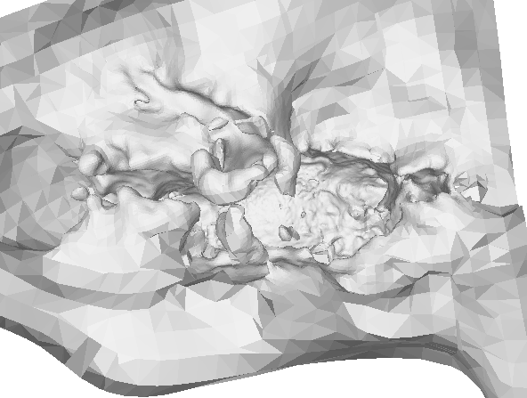
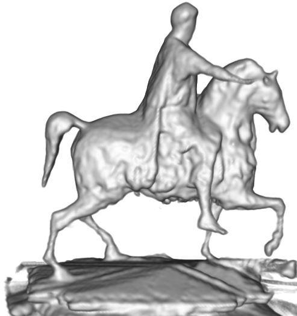

A Statistical Inverse Ray Tracing Approach to Multi-View Stereo
Introduction | Datasets | Recent Results | Comparison with PMVS2 | Convergence
building14 | horse29 | elephants40
Input Images
Thumbnail views of the 29 input images of a horse statue on Brown campus, cluttered by trees and buildings in the background. Because the statue is high, all views are upward, which makes the top of the staute invisible.
PMVS2
Two different views of the point cloud generated by PMVS2. The sides of the horse and horse-rider are reconstructed densely. The tops of the horse, horse-rider and the statue base are missing, because no views can see those regions.

Three different views of the textured and non-textured models of the surface model generated by PMVS2 + PoissonRecon. In this case, PoissonRecon fails miserably. This is very likely because the missing regions of the point cloud is too large, and the PoissonRecon tries to generate a closed surface, which leads to out-of-control.
Three different views of the textured and non-textured models of the surface model generated by PMVS2 + BallPivoting. BallPivoting generates surfaces in less aggressive manner compared with PoissonRecon, resulting in a noisy and incomplete surface.
IRAY (our system)


Three different views of the textured and non-textured models of the surface model generated by IRAY (our system). It can be seen that our system does a much better job of recovering the geometry of the horse, horse-rider and the base of the statue. It has successfully reconstructed the top of the objects, which are non-visible in all views. It is possible because although these regions are not visible, they are confined by the visibility constraints, and combined with the geometry smoothness prior, our system outputs a reasonable reconstruction of that region.